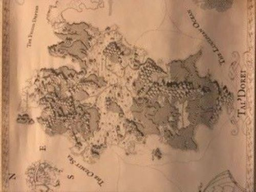

Our Next Adventure
A Trip to Tal'Dorei
Whether you have been following the the antics of Critical Role for years via their webshow/podcast or are just stumbling across it for the first time there are some great tools available to vault your adventurers in to Exandria.
Check out our Resources page to get started!